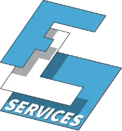
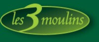
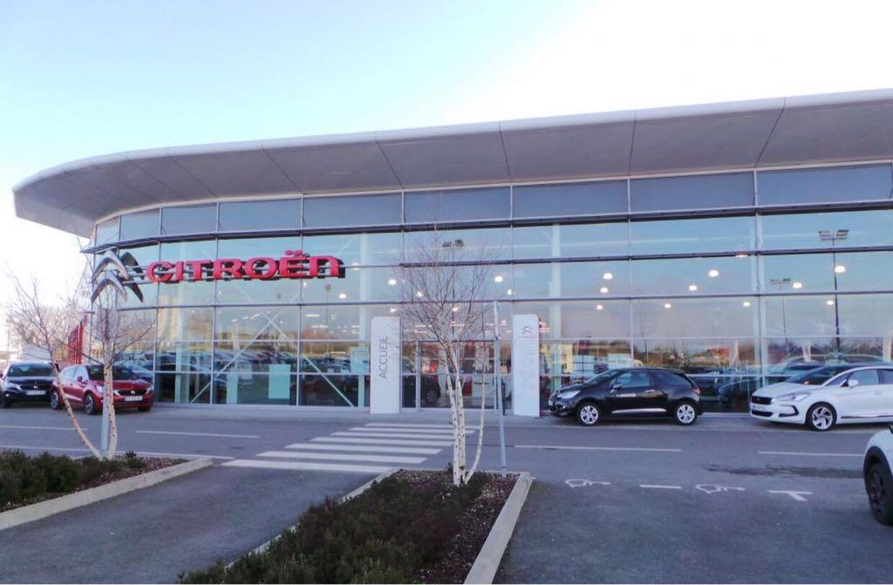
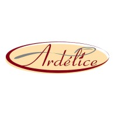

FL Services Échafaudages - Été 2025

Pendant l'été 2025, durant un mois et demi, j'ai eu l'opportunité de travailler chez FL Services
Échafaudages en
tant que manutentionnaire.
J'ai pu réaliser les tâches suivantes :
- Tri et rangement du matériel
- Préparation de matériel pour les chantiers
- Montage et démontage des échafaudages
- Chargement et déchargement des camions
Ce travail m'a permis de développer mon sens de l'organisation, ma rigueur ainsi que mon esprit d'équipe. J'ai également appris à suivre les consignes de sécurité et à respecter les plans de montage.
Serre des trois Moulins - Vacances de Pâques 2024

Durant les vacances de Pâques 2024, j'ai eu l'opportunité de travailler à la Serre des trois Moulins en
tant que cueilleur de muguet.
Durant cette expérience, j'ai appris à travailler dans des conditions exigeantes et pénibles.
Citröen Stellantis & You - Juin 2022

durant le mois de juin 2022, j'ai eu l'opportunité de réaliser un stage d'une durée d'une semaine dans la
vente automobile chez un
concessionnaire automobile Citröen Stellantis & You.
durant ce stage, j'ai pu réaliser les tâches suivantes :
- assister mon maître de stage pour remplir des documents
- participer à des réunions d'équipe
- observer les étapes de vente
Pendant cette courte période, j'ai pu découvrir comment mettre en avant les points forts d'un produit pour ainsi convaincre le client.
Ardelice - Juin 2022

durant le mois de juin 2022, j'ai aussi réalisé un stage d'une durée d'une semaine dans les pâtisseries
surgelées chez Ardelice.
durant ce stage, j'ai pu réaliser les tâches suivantes :
- fabrication des produits dans le respect des règles d'hygiène lié à l'application
- Mise en boite des produits et filmage des palettes pour la livraison
Grâce à ce stage, j'ai pu découvrir le travail dans un domaine avec des normes d'hygiène très strictes, ce qui a renforcé mon sens des responsabilités et ma rigueur.